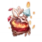
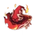

| Nome | Artefatos | Imagem | Atributos | Efeitos | Como obter |
|---|---|---|---|---|---|
|
|
Flor da Vida | HP |
|
Domínnio: Palácio Oculto da Fórmula Zhou | |
| Pluma da Morte | ATQ | ||||
| Areia do tempo | HP% | ||||
| Cálice de Erátema |  | Dano Pyro | |||
| Tiara de Logos |  | Taxa crítica ou Dano crítico |